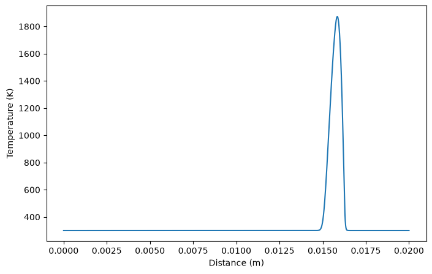
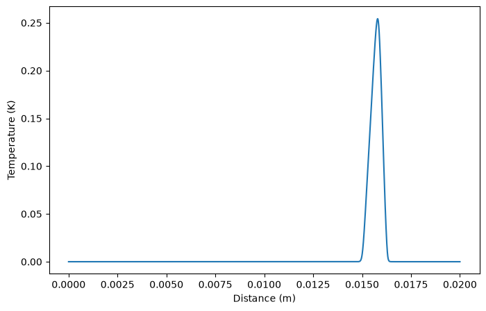
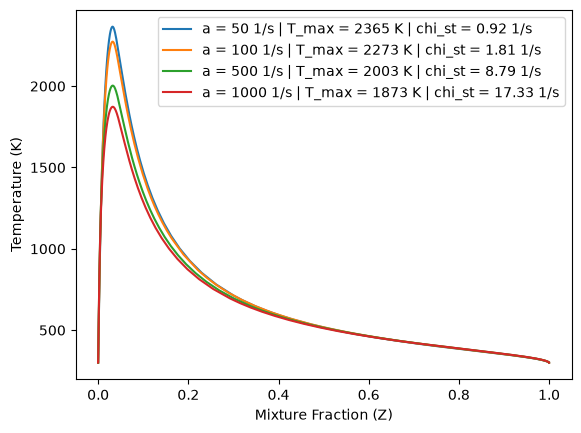
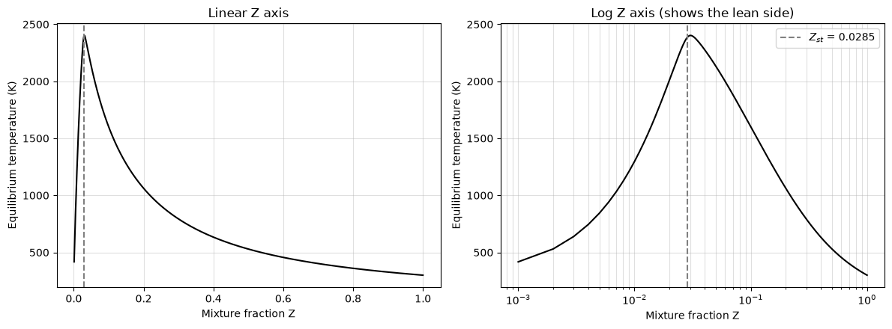
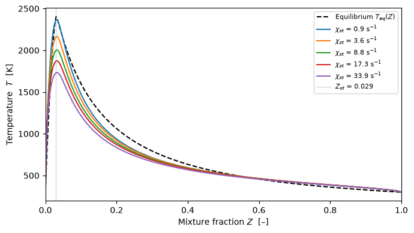

import cantera as ct
import numpy as np
import matplotlib.pyplot as plt
Task 1 - \(T(Z)\) at Increasing Scalar Dissipation Rate¶
def solve_counterflow(strain_rate, mechanism="h2o2.yaml",
fuel="H2", T_fuel=300.0, T_ox=300.0,
p=101325.0, width=0.02):
"""
Solve a H2/air counterflow diffusion flame at a given strain rate.
Parameters
----------
strain_rate : float
Target strain rate in 1/s.
mechanism : str
Cantera mechanism file.
fuel : str
Fuel species name.
T_fuel : float
Fuel stream temperature in K.
T_ox : float
Oxidiser stream temperature in K.
p : float
Pressure in Pa.
width : float
Domain width in m.
Returns
-------
cantera.CounterflowDiffusionFlame
Solved flame object.
"""
gas = ct.Solution(mechanism)
fuel_stream = f"{fuel}:1"
ox_stream = "O2:0.21, N2:0.79"
flame = ct.CounterflowDiffusionFlame(gas, width=width)
flame.fuel_inlet.X = fuel_stream
flame.fuel_inlet.T = T_fuel
flame.oxidizer_inlet.X = ox_stream
flame.oxidizer_inlet.T = T_ox
flame.P = p
# Set mass fluxes to achieve target strain rate
# For symmetric counterflow: a ≈ 2 * mdot / (rho * L/2)
gas.TPX = T_fuel, p, fuel_stream
rho_f = gas.density
gas.TPX = T_ox, p, ox_stream
rho_ox = gas.density
mdot = strain_rate * 0.5 * width * 0.5 * (rho_f + rho_ox)
flame.fuel_inlet.mdot = mdot
flame.oxidizer_inlet.mdot = mdot
flame.set_refine_criteria(ratio=3, slope=0.05, curve=0.1)
flame.solve(loglevel=0, auto=True)
return flame
df_flame = flame.to_pandas()
df_flame.head()
Output
grid velocity spreadRate Lambda T density X_H2 \
0 0.000000 76.554167 9.743717e-18 -2.084724e+06 300.0 0.081894 1.0
1 0.000426 76.493953 1.415012e+02 -2.084724e+06 300.0 0.081894 1.0
2 0.000851 76.313314 2.830024e+02 -2.084724e+06 300.0 0.081894 1.0
3 0.001277 76.012247 4.245036e+02 -2.084724e+06 300.0 0.081894 1.0
4 0.001702 75.590754 5.660047e+02 -2.084724e+06 300.0 0.081894 1.0
X_H X_O X_O2 X_OH X_H2O X_HO2 \
0 3.291891e-15 0.0 1.616098e-15 6.989079e-18 0.000000e+00 0.0
1 3.287032e-15 0.0 1.616098e-15 7.982616e-19 7.055326e-20 0.0
2 3.279319e-15 0.0 1.616098e-15 0.000000e+00 0.000000e+00 0.0
3 3.270038e-15 0.0 1.616098e-15 0.000000e+00 0.000000e+00 0.0
4 3.259876e-15 0.0 1.616098e-15 0.000000e+00 0.000000e+00 0.0
X_H2O2 X_AR X_N2
0 1.586003e-19 2.349687e-17 0.0
1 1.586003e-19 2.349687e-17 0.0
2 1.586003e-19 2.349687e-17 0.0
3 1.586003e-19 2.349687e-17 0.0
4 1.586003e-19 2.349687e-17 0.0
df_flame.shape
Output
(248, 16)
df_flame.info()
Output
<class 'pandas.DataFrame'>
RangeIndex: 248 entries, 0 to 247
Data columns (total 16 columns):
# Column Non-Null Count Dtype
--- ------ -------------- -----
0 grid 248 non-null float64
1 velocity 248 non-null float64
2 spreadRate 248 non-null float64
3 Lambda 248 non-null float64
4 T 248 non-null float64
5 density 248 non-null float64
6 X_H2 248 non-null float64
7 X_H 248 non-null float64
8 X_O 248 non-null float64
9 X_O2 248 non-null float64
10 X_OH 248 non-null float64
11 X_H2O 248 non-null float64
12 X_HO2 248 non-null float64
13 X_H2O2 248 non-null float64
14 X_AR 248 non-null float64
15 X_N2 248 non-null float64
dtypes: float64(16)
memory usage: 31.1 KB
plt.figure(figsize=(8, 5))
plt.plot(df_flame["grid"], df_flame["T"], label="Temperature (K)")
plt.xlabel("Distance (m)")
plt.ylabel("Temperature (K)")
Output
Text(0, 0.5, 'Temperature (K)')

plt.figure(figsize=(8, 5))
plt.plot(df_flame["grid"], df_flame["X_H2O"], label="Temperature (K)")
plt.xlabel("Distance (m)")
plt.ylabel("Temperature (K)")
Output
Text(0, 0.5, 'Temperature (K)')

for a in [50, 100, 500, 1000]:
flame = solve_counterflow(a)
print(f"target a = {a:5d} 1/s | T_max = {flame.T.max():7.1f} K | "
f"grid points = {len(flame.grid)} | a_max = {flame.strain_rate('max'):8.1f} 1/s")
Output
target a = 50 1/s | T_max = 2365.3 K | grid points = 218 | a_max = 827.0 1/s
target a = 100 1/s | T_max = 2273.3 K | grid points = 230 | a_max = 1536.4 1/s
target a = 500 1/s | T_max = 2003.2 K | grid points = 244 | a_max = 6222.6 1/s
target a = 1000 1/s | T_max = 1873.1 K | grid points = 248 | a_max = 11592.5 1/s
def extract_TZ_profile(flame, fuel="H2", oxidizer="O2:1, N2:3.76"):
"""
Extract temperature and mixture fraction profiles from a solved flame.
Returns
-------
Z : numpy.ndarray
Mixture fraction at each grid point.
T : numpy.ndarray
Temperature in K at each grid point.
chi_st : float
Scalar dissipation rate at the stoichiometric surface (1/s).
"""
Z = flame.mixture_fraction("Bilger") # flame method: element or "Bilger"
T = flame.T
# Z_st from a separate gas object: gas method takes (fuel, oxidizer)
solution = ct.Solution(flame.gas.source)
solution.set_equivalence_ratio(1.0, fuel, oxidizer)
Z_st = solution.mixture_fraction(fuel, oxidizer)
# chi = 2 D (dZ/dx)^2 is not provided by Cantera, so compute it from Z(x)
D = flame.thermal_conductivity / (flame.density * flame.cp_mass)
chi = 2 * D * np.gradient(Z, flame.grid) ** 2 # χ(x), 1/s
idx_st = np.argmin(np.abs(Z - Z_st))
chi_st = chi[idx_st]
return Z, T, chi_st
flame = solve_counterflow(100)
Z, T, chi_st = extract_TZ_profile(flame)
print(Z.shape, T.shape, f"chi_st = {chi_st:.3f} 1/s", f"T_max = {T.max():.0f} K")
print(f"Z from {Z[0]:.2f} to {Z[-1]:.2f}")
Output
(230,) (230,) chi_st = 1.807 1/s T_max = 2273 K
Z from 1.00 to 0.00
for a in [50, 100, 500, 1000]:
flame = solve_counterflow(a)
Z, T, chi_st = extract_TZ_profile(flame)
plt.plot(Z, T, label=f"a = {a} 1/s | T_max = {T.max():.0f} K | chi_st = {chi_st:.2f} 1/s")
plt.xlabel("Mixture Fraction (Z)")
plt.ylabel("Temperature (K)")
plt.legend()
Output
<matplotlib.legend.Legend at 0x7f928ce1b380>

def equilibrium_T_of_Z(Z_range, fuel="H2", T_fuel=300.0, T_ox=300.0,
p=101325.0, mechanism="h2o2.yaml",
oxidizer="O2:0.21, N2:0.79"):
"""
Compute the equilibrium temperature as a function of mixture fraction.
For each Z, the mixture is the linear blend of fuel and oxidiser streams.
The result is the upper-bound temperature envelope for any non-premixed flame.
Parameters
----------
Z_range : array-like
Mixture fraction values in [0, 1].
Returns
-------
numpy.ndarray
T_eq in K at each Z.
"""
Z_range = np.asarray(Z_range, dtype=float)
gas = ct.Solution(mechanism)
T_eq = np.zeros(len(Z_range))
# Fuel and oxidiser streams: mass fractions and specific enthalpy
gas.TPX = T_fuel, p, f"{fuel}:1"
Y_fuel, h_fuel = gas.Y.copy(), gas.enthalpy_mass
gas.TPX = T_ox, p, oxidizer
Y_ox, h_ox = gas.Y.copy(), gas.enthalpy_mass
for i, Z in enumerate(Z_range):
Y_mix = Z * Y_fuel + (1.0 - Z) * Y_ox
h_mix = Z * h_fuel + (1.0 - Z) * h_ox # blended enthalpy
gas.TPY = 0.5 * (T_fuel + T_ox), p, Y_mix # sets the composition
gas.HPY = h_mix, p, Y_mix # state with the blended enthalpy
gas.equilibrate("HP")
T_eq[i] = gas.T
return T_eq
Z = np.linspace(0, 1, 1001)
T = equilibrium_T_of_Z(Z)
# Z_st for H2/air from a separate gas object
ref = ct.Solution("h2o2.yaml")
ref.set_equivalence_ratio(1.0, "H2", "O2:1, N2:3.76")
Z_st = ref.mixture_fraction("H2", "O2:1, N2:3.76")
# Checks
assert np.isclose(T[0], 300.0) and np.isclose(T[-1], 300.0) # pure air / pure fuel stay at 300 K
assert np.isclose(equilibrium_T_of_Z([Z_st])[0], 2387.6, atol=1.0) # equals phi = 1 flame T
print(f"T_max = {T.max():.1f} K at Z = {Z[np.argmax(T)]:.3f} (Z_st = {Z_st:.4f})")
fig, axes = plt.subplots(1, 2, figsize=(12, 4.5))
for ax, scale in zip(axes, ["linear", "log"]):
ax.plot(Z[1:], T[1:], "k")
ax.axvline(Z_st, ls="--", color="gray", label=f"$Z_{{st}}$ = {Z_st:.4f}")
ax.set(xscale=scale, xlabel="Mixture fraction Z", ylabel="Equilibrium temperature (K)")
ax.grid(which="both", alpha=0.4)
axes[0].set_title("Linear Z axis")
axes[1].set_title("Log Z axis (shows the lean side)")
axes[1].legend()
plt.tight_layout()
Output
T_max = 2402.4 K at Z = 0.030 (Z_st = 0.0285)

import matplotlib.pyplot as plt
strain_rates = [50, 200, 500, 1000, 2000] # 1/s — adjust to your mechanism
fig, ax = plt.subplots(figsize=(7, 4))
Z_eq = np.linspace(0, 1, 200)
T_eq = equilibrium_T_of_Z(Z_eq)
ax.plot(Z_eq, T_eq, "k--", lw=1.5, label="Equilibrium $T_{eq}(Z)$")
for a in strain_rates:
flame = solve_counterflow(a)
Z, T, chi = extract_TZ_profile(flame)
ax.plot(Z, T, label=f"$\\chi_{{st}}$ = {chi:.1f} s$^{{-1}}$")
ax.axvline(Z_st, ls=":", color="gray", lw=0.8, label=f"$Z_{{st}}$ = {Z_st:.3f}")
ax.set_xlabel("Mixture fraction $Z$ [–]")
ax.set_ylabel("Temperature $T$ [K]")
ax.legend(fontsize=8)
ax.set_xlim(0, 1)
fig.tight_layout()
#fig.savefig("figures/part2_T_vs_Z.pdf")
